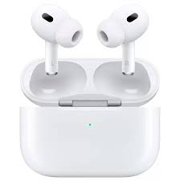

Audio · Earbuds
AirPods Pro 3 or Sony WF-1000XM6: which earbuds actually win
One reviewer switched from AirPods to Sony's new flagship and lasted exactly one week before going back. That story tells you more about this matchup than any spec sheet does.


Why these two earbuds
Apple released the AirPods Pro 3 on 19 September 2025. Sony answered with the WF-1000XM6 on 12 February 2026, pricing them specifically to compete with Apple's flagship. Both remain each company's top wireless earbuds as of September 2026, so this is the real current matchup, not last year's one.
The two take different approaches from the start. The AirPods Pro 3 keep Apple's familiar short-stem design in a compact case. The WF-1000XM6 drop their stem entirely, going for a rounder, stemless shape, though reviewers note the earbuds themselves still protrude more than Apple's.
- ANC, or active noise cancelling: a feature that uses microphones and speakers to cancel out background noise, like traffic or an aircraft engine.
- IP rating: a number showing how well a device resists dust and water. A higher number after the letters usually means better protection.
- Driver: the small speaker inside each earbud that actually produces the sound.
Side by side
In short: the AirPods Pro 3 cost $80 less and resist both dust and water. The Sony WF-1000XM6 cost more but push harder on raw noise cancelling and sound.
See the full spec comparison
| Spec | AirPods Pro 3 | Sony WF-1000XM6 |
|---|---|---|
| Released | 19 September 2025 | 12 February 2026 |
| List price | $249 | $329.99 |
| Street price | Often $229, sometimes $189 to $200 on sale | Often $298 to $300 on sale |
| Noise cancelling chip | Apple's in-house chip, no new H3 this generation | Sony QN3e, four microphones per earbud |
| Drivers | 10.7mm custom high-excursion driver | New dual-material driver |
| Water resistance | IP57, earbuds and case both rated | IPX4 on the earbuds, case has no rating |
| Battery, ANC on | Up to 8 hours | Not directly stated by Sony in the sources we found |
| Charging case | MagSafe wireless, Lightning-free USB-C | USB-C and Qi wireless |
| Health features | Heart rate sensor using light-based sensing | None |
| Standout software feature | Live Translation | Real-time AI restoration of compressed audio |
| Case weight | About 1.55 oz | About 1.65 oz |
Sources: Apple and Sony product pages, plus SoundGuys, AppleInsider and CNN Underscored. Street prices move often with sales.
Noise cancelling
In short: both brands claim a big step up this generation. Reviewers are genuinely split on which actually cancels more noise.
Read the details on noise cancelling
Sony built a new processor for the WF-1000XM6, called QN3e, which the company describes as three times more powerful than the chip in the previous XM5. Sony also moved from six microphones total to eight, four on each earbud, specifically to catch more of the mid-to-high frequency noise common in everyday environments like offices and streets.
Apple says the AirPods Pro 3 block twice the unwanted noise of the AirPods Pro 2, without a dedicated chip upgrade this time around. Several outlets had expected a new H3 chip and were surprised it did not arrive, though the real-world noise cancelling still improved by most accounts.
Here is where it gets genuinely interesting: reviewers do not agree on a winner. TechRadar rated the AirPods Pro 3 noticeably better for ANC. Business Insider preferred the Sony's noise cancelling. CNET sided with Sony on sound quality specifically. That spread tells you the gap between the two is close enough that personal ears and testing conditions can tip the result either way.
Sound quality
In short: Sony leans on its long history tuning headphones for audio purists. Apple focuses on a balanced, crowd-pleasing sound that works for most listeners without adjustment.
Read the details on sound quality
Sony built the WF-1000XM6 around a new driver that combines different materials on the dome and the edge, and the company had its mastering engineers tune the result. Sony also added a 10-band equaliser, letting you shape the sound far more precisely than most wireless earbuds allow. On top of that, Sony uses AI to restore detail lost when you stream a heavily compressed audio file, rebuilding some of it in real time.
Apple's approach is quieter about the engineering and instead focuses on consistency out of the box. The 10.7mm driver and a separate high dynamic range unit aim for a balanced sound most listeners will like immediately, without digging into an equaliser.
One detailed, months-long comparison from SoundGuys called the WF-1000XM6's sound quality excellent and its ANC among the best tested, and its reviewer kept several favourite features, including the 10-band EQ. Even so, that same reviewer went back to the AirPods Pro 3 within a week. The reason had nothing to do with sound.
Fit, size and everyday carrying
In short: the Sony earbuds and case are both noticeably bigger. That sounds minor until you are carrying them in a pocket every day.
Read the details on fit and size
The WF-1000XM6 dropped its stem, which makes the buds themselves more compact in one sense, but reviewers consistently describe them as protruding more from the ear than the AirPods Pro 3. One long-term reviewer put it plainly: the Sony buds are big earbuds, and after weeks of wear, awareness of that bulk never fully went away.
The case tells the same story. Apple's MagSafe case is a small, rounded white block that slips easily into a pocket. Sony's case is boxier, with sharp corners and a matte plastic finish that several reviewers felt was less premium and less pocketable than Apple's.
None of this is about raw durability. It is about the small, daily friction of noticing a slightly bulkier case in your pocket or slightly larger buds in your ears, hundreds of times a week. That is a real factor, even though no spec sheet captures it well.
Health and extra features
In short: the AirPods Pro 3 add a heart rate sensor and dust-plus-water resistance that Sony does not match. Sony answers with a deeper equaliser and AI-assisted sound restoration instead.
Read the details on health and extra features
Apple added a heart rate sensor to the AirPods Pro 3, using light-based sensing similar to what a smartwatch uses, aimed at people who want basic fitness tracking without a wrist device. The AirPods Pro 3 also carry an IP57 rating, meaning they resist both dust and brief submersion in water, a genuine advantage for workouts or rain.
Sony's WF-1000XM6 skip a health sensor entirely and carry only an IPX4 splash resistance rating, with no water protection at all on the charging case. Sony instead put its engineering effort into sound customisation and the AI-based restoration of compressed audio mentioned earlier.
Apple also added Live Translation, which can translate spoken conversation through the earbuds. How useful this is depends heavily on which languages you need and how often you travel or talk with non-native speakers.
Battery and charging
In short: Apple states clear battery figures for the AirPods Pro 3. Sony's own battery claim for the WF-1000XM6 was not clearly published in the sources we checked, so confirm it before you buy if this matters to you.
Read the details on battery and charging
Apple rates the AirPods Pro 3 for up to 8 hours of listening with ANC turned on, or about 7.5 hours with Spatial Audio and head tracking active. Both figures are for the earbuds alone, before the case adds its own extra charges.
We could not find a clearly stated single-charge battery figure for the WF-1000XM6 from Sony in the reporting we reviewed, which is unusual for a flagship launch. If battery life matters a great deal to you, check Sony's own product page or a recent independent battery test before buying.
Charging is straightforward on both. The AirPods Pro 3 case supports MagSafe wireless charging alongside USB-C. The WF-1000XM6 case supports both USB-C and standard Qi wireless charging, so either pair works with a wireless charging pad you may already own.
Which fits you
Work through four quick questions, and see which earbuds your answers point toward. Everything happens on this page, and nothing you pick is recorded.
Quick fit check
Choose whichever answer feels closest to how you would actually use them.
1. How do you feel about carrying a slightly bigger case?
2. What other devices do you use?
3. What matters most in the sound?
4. Will you wear these while exercising or in the rain?
Who tends to prefer which
People who tend to prefer the AirPods Pro 3
- Anyone with an iPhone, Mac or Apple Watch already
- People who want dust and water resistance for workouts
- Buyers who want a smaller, more pocketable case
- Anyone who wants a lower price without a big compromise
People who tend to prefer the Sony WF-1000XM6
- Android users who want the flagship experience to match
- Listeners who want a 10-band EQ and deep sound control
- Anyone who streams a lot of compressed, lower-quality audio
- Buyers who do not mind paying more for the newest chip
Four short cases
The daily commuter who wants to forget they are wearing earbuds. The AirPods Pro 3's smaller size and case made one long-term reviewer reach for them without thinking, which is exactly what commuting earbuds should do.
The audio enthusiast who likes to tune their own sound. Sony's 10-band EQ and mastering-engineer tuning give you far more control than Apple's more fixed sound signature.
The gym-goer or runner. The AirPods Pro 3's IP57 rating covers both dust and real water exposure, a clear edge over Sony's splash-only IPX4 rating.
The Android owner who still wants a premium pair. Several of Apple's extra features work best or only within Apple's own ecosystem, so Sony is the more natural flagship choice here.
Buying in Uzbekistan
Prices above are US prices, so expect a different number at a local shop here. A short checklist can help before you commit.
- Confirm the warranty terms. Earbuds bought through an official Apple or Sony channel usually include local repair or replacement support. An unofficial import may be cheaper at first and harder to service later.
- Check the exact model name. Older stock of the AirPods Pro 2 or Sony WF-1000XM5 may still be sold at a lower price. Confirm you are getting the current Pro 3 or XM6 if that is what you intend to buy.
- Ask about regional features. Live Translation and some AI features roll out by language and region, so confirm what actually works where you live before relying on it.
- Buy genuine accessories. Counterfeit charging cases are common for both brands. Check the model number and packaging against the official listing.
Questions people ask
Which has better noise cancelling, AirPods Pro 3 or Sony WF-1000XM6?
Reviewers disagree. TechRadar favoured the AirPods Pro 3. Business Insider favoured the Sony. Both improved meaningfully over their previous generation, and the gap between them is close.
Why did one reviewer switch back to AirPods after a week?
Size and daily convenience, not sound quality. The reviewer liked the Sony's sound and noise cancelling but found the larger earbuds and case became a small, constant annoyance.
Do the Sony WF-1000XM6 work well with an iPhone?
Yes, for playback and calls. You will not get Apple-only features like Live Translation or the heart rate sensor, since those are built specifically for Apple's own ecosystem.
Are the AirPods Pro 3 waterproof?
They carry an IP57 rating, which covers dust resistance and brief submersion in water, not full waterproofing for activities like swimming.
Is the extra $80 for the Sony WF-1000XM6 worth it?
It depends what you value. You get a more powerful noise-cancelling chip, deeper sound customisation and AI audio restoration. You give up water resistance, a smaller case, and Apple's ecosystem features.